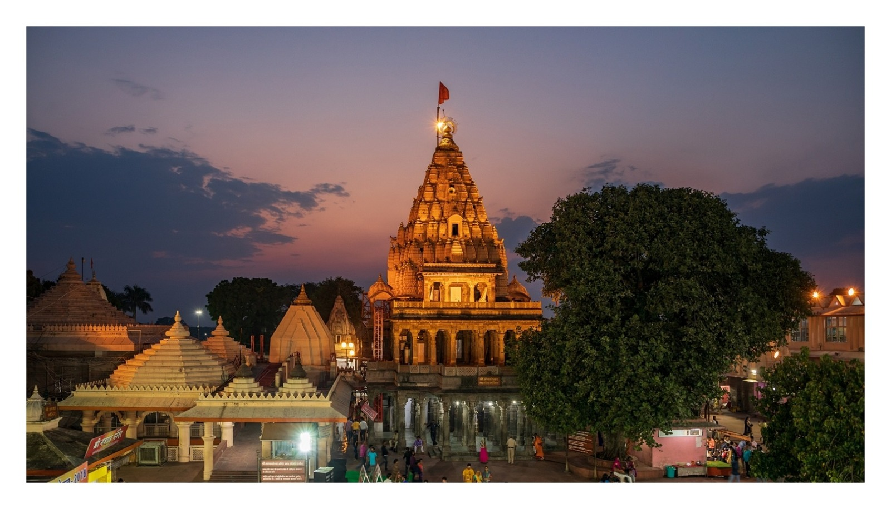

August marks the tail end of the monsoon season in most parts of India. This means that the weather is cooler and more pleasant, and the countryside is lush and green, making it a great time to visit hill stations, national parks, and wildlife reserves. Since it is a changing season August is full of festivals and cultural events in India.
28' August -- Onam
The festival of Onam is celebrated throughout the state of Kerala. Kerala during Onam is marked by happiness, excitement and enjoyment among all sections of people. Onam is celebrated as an outcome of reasons that have to do with mythology as well as old agrarian practices. If one is to go by the myth, then King Mahabali or Maveli was a generous and virtuous ruler, who had once ruled Kerala. During his rule, the kingdom became so prosperous that devas (gods of the Heaven) felt jealous about this and also for the reason that King Mahabali was an asura - a member of the demon clan - who were the enemies of devas. So, they sent Lord Vishnu in the guise of Vamana (a dwarf) to King Mahabali. As an offering from the generous king, Vamanarequested Mahabali for three feet of land. And at the time of measuring the three feet of land,Vamana grew so huge that he measured all the worlds in two steps. Since he had nowhere else to place his third step, Mahabali asked Vamana to place it on his head. Pleased by his benevolence, Vamana blessed Mahabali before he was sent to the nether world and granted him permission to visit his dear subjects once in a year. This occasion is celebrated by all Keralites as Onam.
Thirkkakara temple
The Thirkkakara temple is a must-visit place during Onam in Kerala. It is a temple dedicated to Lord Vamana, one of the incarnations of Lord Vishnu. This ten-day-long festival brings in the best of festive spirit among the people of Kerala and is celebrated with much splendor. Especially on the first and the last day of the festival, it exudes a spiritual aura that one might not have experienced before.
21' August -- Naga Panchami
Naga Panchami is celebrated on the fifth day of the lunar month of Shravan in the Hindu calendar. Nag Panchami is observed to celebrate Krishna's victory over Kaliya nag. In 2023, Naag Panchami will be celebrated on the 21st of August in most parts of the country.

Mahakaleshwar Temple
In Mahakaleshwar, Ujjain a special Nag Puja is organized at the Nagchandreshwar shrine of Mahakaleshwar Temple in Ujjain, which is open only for 24 hours on Naag Panchami. Mahakaleshwar temple at Ujjain hosts a huge celebration on Nag Panchami. On the third floor of this temple, there is a rare idol of Lord Shiva known as Nagchandreshwar Mahadev. Nagchandreshwar is a manifestation of Lord Shiva. Lord Shiva is closely associated with Nagas (Snakes) and (Chandra) Moon. This rare and auspicious idol is open to darshan only on the Nagpanchami day in Shravan month. Thousands of devotees visit Mahakaleshwar Temple on Nagpanchami to have the darshan of Shiva as Nagchandreshwar.
30' August -- Raksha Bandhan
Raksha Bandhan festival is considered a symbol of brother and sister love. This festival is celebrated every year on the full moon day of Shravan month. On this festival of sister-brother, a sister ties Rakhi to her brother. After tying the rakhi, the brother gives money or gifts to his sister with love and promises to protect his sister forever. In 2023, Raksha Bandhan will be celebrated on the 30 of August in most parts of the country.
Jagannath Puri Temple
In Jagannath Puri temple according to tradition, Patara Bisoi servitors prepare 'Pata Rakhi' which Devi Subhadra ties to Lord Balabhadra and Lord Jagannath. When Rakhsa Bandhan’ is celebrated, is an important date in the calendar of festivals of Jagannath temple in Odisha’s Puri town. Like other festivals, it also involves some rituals.
15' August -- Aadi Amavasya
The month of Aadi is considered highly auspicious when divine forces bless the earth with grace and answer your prayers. Offering Tarpanam rituals for your ancestors on Aadi Amavasya can help their souls attain Moksha (salvation), and they in turn bestow their blessings on you.On Amavasya (New Moon) day, the Sun and the Moon occupy the same sign. The Sun signifies the father and soul; whereas the Moon signifies the mother and mind. Aadi Amavasya is of great importance because the Sun and the Moon occupy Cancer, the sign of Moon.It is believed that on Aadi Amavasya, spirits are more willing to accept the offerings and are satisfied when their successors perform Tarpanam rituals for them. In addition, every year, during the month of Aadi, the Sun starts its movement towards the South, which is called ‘Dakshinayana’ (Dakshin means south, and Ayana means travel). Since this is the first New Moon day during this period, it is regarded as the more powerful day for performing Tarpanam rituals.
Sri Ramanathaswamy Temple
It was a sea of humanity at the 'Agni Theertham' seashore here as thousands of pilgrims from all parts of the country and abroad thronged the pilgrim-island to have a holy dip in the sea on Saturday on the occasion of 'Mahaalya Amavaasya', which falls in the Tamil month of 'Purattasi'.People came with their families and after a dip in the sea and with help of priests on the 'Agni Theertham' beach, offered 'Tharpanam', besides making other offerings in an act of thanks-giving to their forefathers. Depending on their personal affordability, people gifted cows, clothing, food etc.The devotees then prayed at the Sri Ramanathaswamy temple overlooking the sea front and also soaked themselves with the water taken from the 22 'sacred wells' in the temple complex on the occasion.'Mahaalya Amavaasya' is considered particularly important as, according to Chandra Iyer, priest in the Rameswaram temple, legend has it that on this occasion, all departed souls across 21 generations take "special permission from Lord Yama (the God of Death) to visit earth in the form of 'Pitrus' and bless their surviving offspring on this earth this day every year. Hence, the crowd was exceptionally heavy since the wee hours today.